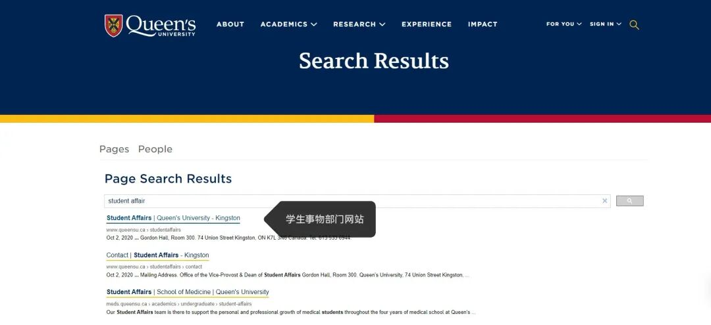
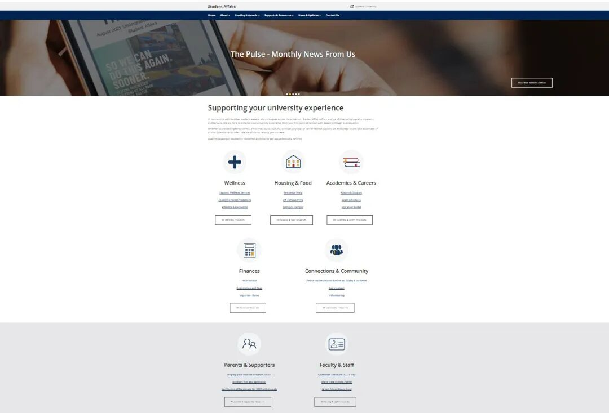
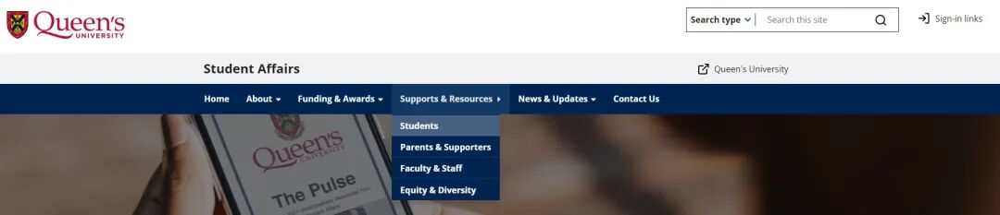
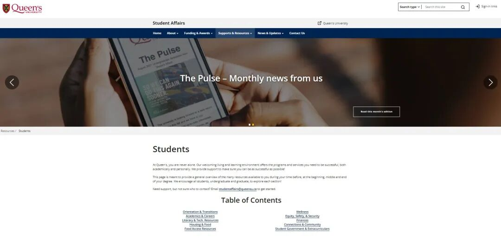
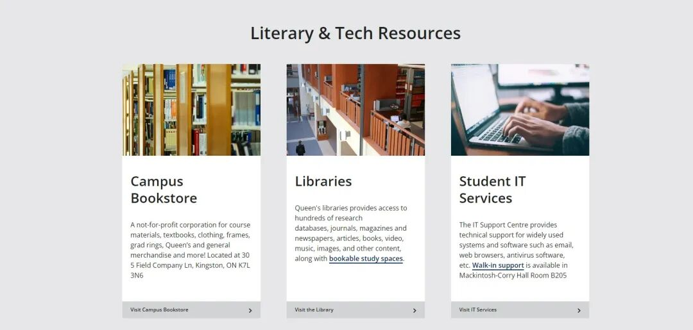
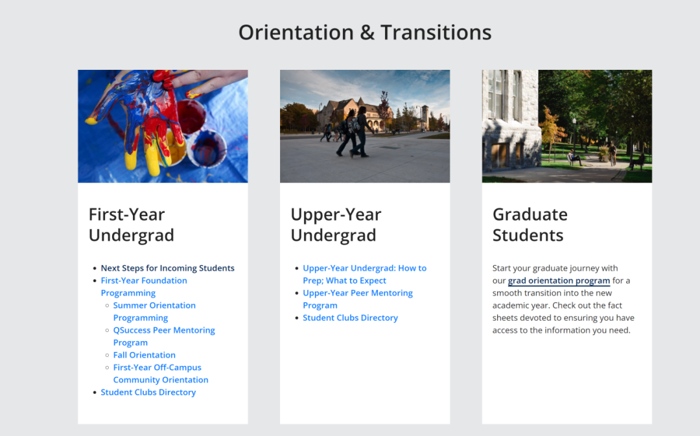

学生事务部门网站
什么是学生事务部门
学生事务部通过与全校教师、各个学校相关部门合作，为学生提供一系列多样化的高质量服务和学术资源。旨在丰富女王大学学生的在校学习，生活体验。并帮助学生解决校内生活和学习中遇到的问题。
学生事务部网站汇总了学生在攻读学位之前、开始、中期和结束期间可以使用的许多校内服务的详细信息和不同学校部门的联系方式。学生们可以通过探索这个网站了解校内资源的种类和获取这些资源的方式。
Resources
如何使用这个页面

- 通过学校官网搜索Student Affair进入学生事务部的网站页面

2. 进入页面后可以看到页面上提供的信息目录，涵盖了校内各个方面资源的多元化信息，包括学术、情感、社交、文化、精神、身体健康，求职等相关的信息

3. 在这里熊猫酱仅为大家深入讲解一下大家最关心的校内学习相关的信息该如何寻找，点击页面上方的Support&Resources选项，在下拉菜单中选择Student

4. 进入Student Resources页面后就能看到所有学校为学生提供的服务，这里建议大家每个单元内容都自行进行探索一下，这些内容介绍了很多非常有价值的校内学习/生活资源和学术服务！

5. 例如目录中的Literary & Tech. Resources单元索引的就是学校的校内图书店，图书馆以及学校提供的IT服务的详细信息和联系方式，图书馆的页面中有图书馆当天的开放时间和如何预定自习室的教程，建议大家每个页面都仔细了解一下喔~

- 除此之外，Student Resources页面还包含了学校建议学生在攻读学位之前、开始、中期和结束期间取得学术和个人成功所需的计划和服务，大家有兴趣的话也可以自行探索一下~
常用校内部门联系方式
在这里，熊猫酱也为大家介绍一些新生朋友们在入学期间常用的学校邮件地址~
QUIC
Queen's University International Center女王大学国际学生中心旨在帮助国际学生更快融入校内生活，如果有签证/国际学生求职等国际学生相关问题可以向QUIC寻求帮助！
Solus相关
在使用solus的过程/注册课程的过程中/对solus显示的学杂费产生任何疑问，请向这个邮件地址寻求帮助！
UHIP
大学健康保险计划 (UHIP) 是学校强制性要求学生参与的基本健康保险计划，适用于所有将在安大略省居住超过 3 周的国际学生及其家属。对保险内容/费用/获取保险卡的疑问可以向这个邮件地址寻求帮助！
学生卡
学生卡是校内的身份证明，并作为学生享受多种校内服务的通行证，例如：进入食堂就餐或使用学校的健身房都需要刷学生卡。补办学生卡，更新学生卡等相关疑问可以向这个邮件地址寻求帮助！
校内咨询
在学校遇到学习或校内资源上的问题需要学校老师的帮助，但不确定该联系谁时，请发送电子邮件至学生事务部门咨询如何在校内寻求帮助！
文字 | Eric
排版 | Eric
编辑 | Eric
审核 | Taniya、Kyle